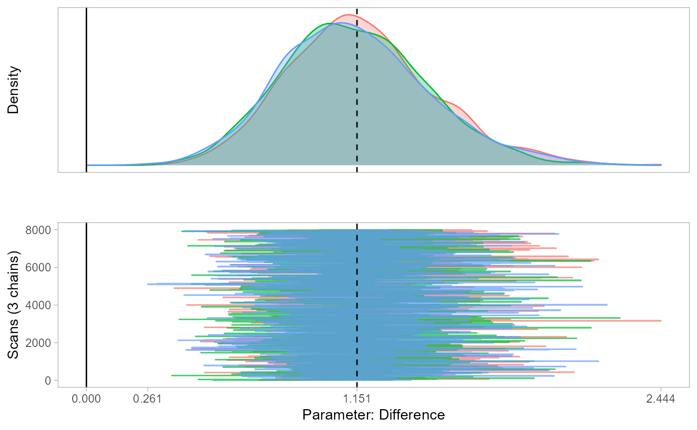
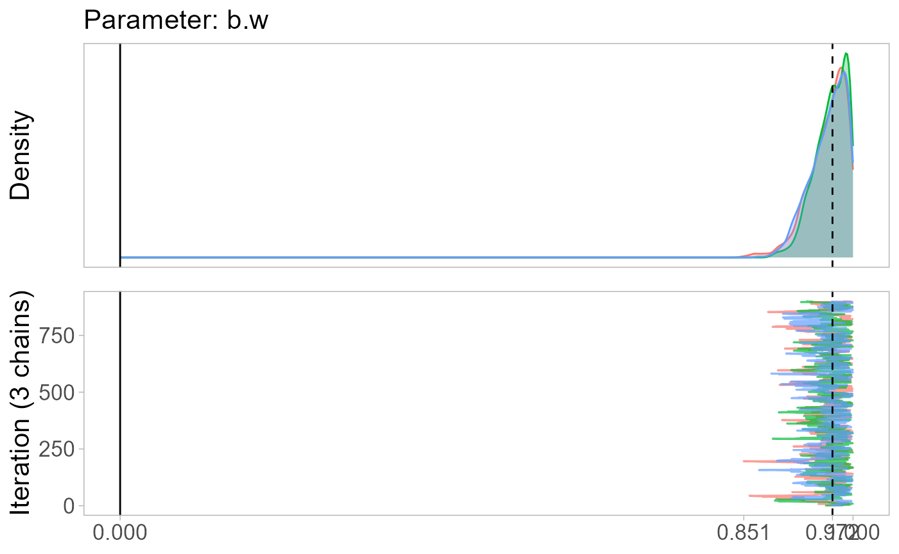
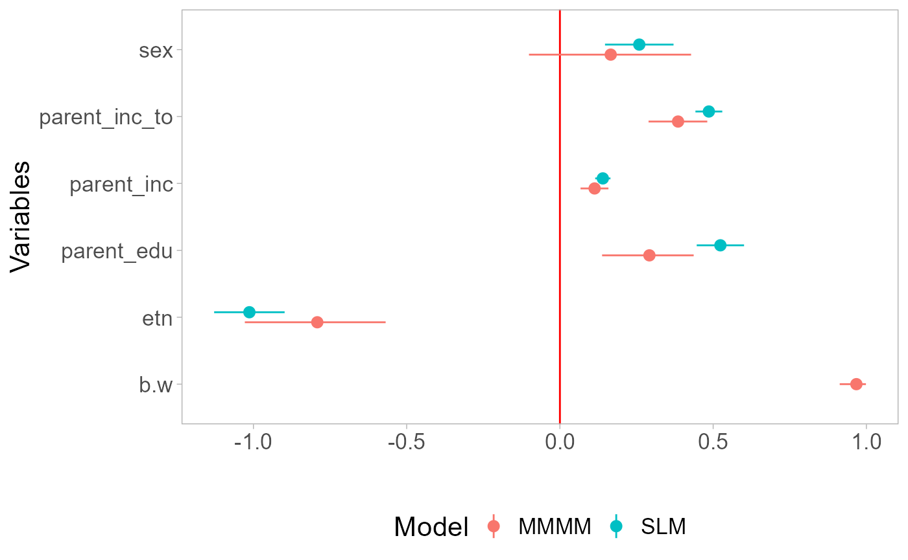

I present three examples to demonstrate how the MMMM can be applied to analyze spatial, network, and aggregation problems.
- Example 1: The effect of air quality on home values (spatial regression)
- Example 2: All friends or just your best friend? (network regression)
- Example 3: The effect of political parties’ financial dependency on the survival coalition governments (aggregation regression)
The effect of air quality on home values
The R file of this example can be found here.
This spatial analysis example is based on Harrison & Rubenfield 1978, who study the effect of air quality on home values, and a re-analysis by Bivand 2017.
The study employs census tract data from the Boston Standard Metropolitan Statistical Area in 1970. With tracts containing no housing units or comprised entirely of institutions excluded, the sample contains 506 census tracts. Air quality is measured by the concentration of nitric oxides in the air, which is obtained from a meteorological model (Transportation and Air Shed Simulation Model). I refer to their paper for more information on data and operationalization.
Let us load in the data and plot the home values across town:
library(spData) # spatial datasets
library(sf) # read spatial datasets
library(spdep) # create spatial weights
library(spatialreg) # spatial regression models
library(dplyr)
library(ggplot2)
library(rmm)
# Load spatial data from Boston
boston <-
read_sf(system.file("shapes/boston_tracts.gpkg", package = "spData")) %>%
select(CMEDV, NOX, CRIM, RM, DIS, AGE, LSTAT, geom) %>%
st_transform(crs = 5070) %>% # use Albers equal-area conic projection
mutate(tid = row_number(), lnCMEDV=log(CMEDV), across(c(NOX, CRIM, RM, DIS, AGE, LSTAT), scale)) %>%
relocate(tid, CMEDV, lnCMEDV)
# Dependent variable:
# lnCMEDV = ln(median home value in $1000)
# Plot median home values across Boston
ggplot(boston, aes(fill = CMEDV)) +
geom_sf(color = NA) +
labs(fill = "Median home value") +
scale_fill_viridis_b() +
theme(legend.position = "bottom")
# Explanatory variables (standardized):
# NOX = nitric oxides concentration
# CRIM = per capita crime
# RM = avg. number of rooms per dwelling
# DIS = weighted distance to five Boston employment centers
# AGE = proportion of units built prior 1940
# LSTAT = percentage working-class populationFirst, we examine three canonical spatial regression models:
- Residual spatial effect: . This model is called the spatial error model because it incorporates the residuals of other spatial units into the regression equation of the focal unit.
- Exogenous spatial effects: . This model is called the spatial lag-x model because it incorporates the covariates of other spatial units into the regression equation of the focal unit.
- Endogenous spatial effect: . This model is called the spatial autoregressive model because it incorporates the outcomes of other spatial units into the regression equation of the focal unit.
More information on those models and combinations of them can be found in Gibbons, Overman & Patacchini 2015.
To specify any of these models, we must construct a spatial weight matrix , which defines the neighborhood structure for each location. is an matrix, where represents the number of neighborhoods. Each element quantifies the relationship between locations and , with the convention that along the diagonal.
Neighborhood relationships can be defined in two ways:
- Binary contiguity:
if
and
are neighbors, and 0 otherwise.
- Distance-based weighting:
is a continuous function of distance.
Continuous weights are often row-standardized so that the sum of all weights for a given location equals 1.
The R package spatialreg takes the weight matrix as
list:
# Create row-standardized weight matrix
boston_nb <- poly2nb(as_Spatial(boston), row.names = boston$tid) # from polygon list to neighbor list
boston_wmat <- nb2mat(boston_nb, zero.policy = TRUE) %>% as.matrix() # weight matrix
boston_wlist <- nb2listw(boston_nb, style = "W") # weight matrix as listNow let us estimate the three models:
# Residual spatial effect (spatial error model):
mod1 <-
errorsarlm(
lnCMEDV ~ NOX + CRIM + RM + DIS + AGE,
data = boston,
listw = boston_wlist
)
mod1 %>% summary()
#>
#> Call:
#> errorsarlm(formula = lnCMEDV ~ NOX + CRIM + RM + DIS + AGE, data = boston,
#> listw = boston_wlist)
#>
#> Residuals:
#> Min 1Q Median 3Q Max
#> -0.8619402 -0.0727632 0.0019691 0.0727349 0.8610672
#>
#> Type: error
#> Coefficients: (asymptotic standard errors)
#> Estimate Std. Error z value Pr(>|z|)
#> (Intercept) 3.0114297 0.0424386 70.9596 < 2.2e-16
#> NOX -0.1245513 0.0238428 -5.2238 1.752e-07
#> CRIM -0.0555031 0.0098813 -5.6170 1.943e-08
#> RM 0.1644857 0.0093976 17.5029 < 2.2e-16
#> DIS -0.0805092 0.0328909 -2.4478 0.01437
#> AGE -0.0851376 0.0153088 -5.5613 2.677e-08
#>
#> Lambda: 0.83765, LR test value: 385.28, p-value: < 2.22e-16
#> Asymptotic standard error: 0.026879
#> z-value: 31.164, p-value: < 2.22e-16
#> Wald statistic: 971.18, p-value: < 2.22e-16
#>
#> Log likelihood: 177.6898 for error model
#> ML residual variance (sigma squared): 0.023977, (sigma: 0.15484)
#> Number of observations: 506
#> Number of parameters estimated: 8
#> AIC: -339.38, (AIC for lm: 43.904)
# Exogenous spatial effect (spatial lag-x model):
mod2 <-
lmSLX(
lnCMEDV ~ NOX + CRIM + RM + DIS + AGE,
data = boston,
listw = boston_wlist,
Durbin = ~ NOX + CRIM + RM + DIS + AGE
)
mod2 %>% summary()
#>
#> Call:
#> lm(formula = formula(paste("y ~ ", paste(colnames(x)[-1], collapse = "+"))),
#> data = as.data.frame(x), weights = weights)
#>
#> Coefficients:
#> Estimate Std. Error t value Pr(>|t|)
#> (Intercept) 3.031e+00 1.043e-02 2.907e+02 0.000e+00
#> NOX -1.455e-01 4.017e-02 -3.622e+00 3.227e-04
#> CRIM -5.851e-02 1.503e-02 -3.893e+00 1.125e-04
#> RM 1.538e-01 1.434e-02 1.072e+01 2.856e-24
#> DIS -6.597e-02 7.453e-02 -8.852e-01 3.765e-01
#> AGE -9.190e-02 2.369e-02 -3.879e+00 1.190e-04
#> lag.NOX 8.907e-02 4.843e-02 1.839e+00 6.650e-02
#> lag.CRIM -1.742e-01 2.279e-02 -7.643e+00 1.112e-13
#> lag.RM 8.074e-02 2.211e-02 3.652e+00 2.883e-04
#> lag.DIS -3.609e-02 7.987e-02 -4.519e-01 6.516e-01
#> lag.AGE 9.673e-03 3.465e-02 2.792e-01 7.802e-01
# Endogenous spatial effect (spatial autoregressive model):
mod3 <-
lagsarlm(
lnCMEDV ~ NOX + CRIM + RM + DIS + AGE,
data = boston,
listw = boston_wlist
)
mod3 %>% summary()
#>
#> Call:lagsarlm(formula = lnCMEDV ~ NOX + CRIM + RM + DIS + AGE, data = boston,
#> listw = boston_wlist)
#>
#> Residuals:
#> Min 1Q Median 3Q Max
#> -0.5905925 -0.0937669 -0.0081804 0.0784800 0.9956998
#>
#> Type: lag
#> Coefficients: (asymptotic standard errors)
#> Estimate Std. Error z value Pr(>|z|)
#> (Intercept) 0.9939659 0.0860809 11.5469 < 2.2e-16
#> NOX -0.0286955 0.0134985 -2.1258 0.0335176
#> CRIM -0.0606110 0.0087944 -6.8920 5.501e-12
#> RM 0.1343823 0.0088565 15.1732 < 2.2e-16
#> DIS -0.0627520 0.0132732 -4.7277 2.271e-06
#> AGE -0.0458586 0.0124080 -3.6959 0.0002191
#>
#> Rho: 0.67045, LR test value: 347.92, p-value: < 2.22e-16
#> Asymptotic standard error: 0.028312
#> z-value: 23.681, p-value: < 2.22e-16
#> Wald statistic: 560.8, p-value: < 2.22e-16
#>
#> Log likelihood: 159.0057 for lag model
#> ML residual variance (sigma squared): 0.028135, (sigma: 0.16774)
#> Number of observations: 506
#> Number of parameters estimated: 8
#> AIC: -302.01, (AIC for lm: 43.904)
#> LM test for residual autocorrelation
#> test value: 15.915, p-value: 6.6236e-05Results:
The spatial error model estimates that after conditioning on those five covariates, the residual is still spatially correlated, as =0.84.
The spatial lag-x model estimates an exogenous spatial effect for each of the considered covariates. The effect of air quality of neighboring locations, for instance, is estimated to be =0.09. That is, the home values of a given neighborhood increases if the air quality of surrounding neighborhoods decreases.
The spatial autoregessive (SAR) model estimates a endogenous spatial effect of =0.67. That is, the SAR summarizes the spatial dependency in one coefficient.
The MMMM for spatial analysis
Let denote the outcome for location .
Using the MMMM, we can model this outcome based on:
(i) the effects of the location’s own features,
(ii) the effects of its neighbors’ features,
,
where
indexes the neighbors,
is the set of neighbors of location
,
represents the observed features of neighbor
,
and
captures the combined influence of unobserved features.
This model closely resembles a combination of the spatial lag and spatial error models. The key distinction is that the error term for each location is decomposed into two components: a random effect for its role as a focal location and a separate random effect for its role as a neighbor.
Conceptually, the combination of exogenous spatial effects and spatial error is intuitive, as a location is influenced by its neighbors’ entire right-hand side of the regression equation. In contrast, the endogenous spatial effect model is more challenging to interpret and faces identification issues when both endogenous and exogenous effects are included (spatial Durbin model).
To estimate a spatial MMMM, the neighbors of each location must be included in the dataframe as individual rows:
# Neighbor list to data.frame
nb2df <- function(nb) {
return(
data.frame(
tid = rep(1:length(nb), sapply(nb, length)),
tid_nb = unlist(nb)
)
)
}
boston_df <-
nb2df(boston_nb) %>%
group_by(tid) %>%
mutate(n=n()) %>%
ungroup() %>%
inner_join(boston, by=c("tid")) %>% # own features
inner_join( # neighbor features
as.data.frame(boston) %>%
select(-CMEDV,-lnCMEDV, -geom) %>%
rename_with(~paste0(.,"_nb")),
by=c("tid_nb")
)
head(boston_df %>% select(tid, tid_nb, NOX, CRIM, NOX_nb, CRIM_nb))
#> # A tibble: 6 × 6
#> tid tid_nb NOX[,1] CRIM[,1] NOX_nb[,1] CRIM_nb[,1]
#> <int> <int> <dbl> <dbl> <dbl> <dbl>
#> 1 1 2 1.86 0.624 1.86 0.0275
#> 2 1 3 1.86 0.624 1.86 0.185
#> 3 1 6 1.86 0.624 1.86 0.0260
#> 4 1 8 1.86 0.624 1.86 0.0708
#> 5 1 311 1.86 0.624 0.434 -0.272
#> 6 1 313 1.86 0.624 0.434 -0.207For each tract tid, we have one row for each of its
neighbors tid_nb. These rows contain the covariates of
tid, which remain constant across its neighbors, as well as
the covariates of the neighbors themselves, such as NOX_nb,
CRIM_nb, ….
With this setup, we are now ready to estimate the MMMM:
# Spatial random effect:
mod.rmm1 <-
rmm(
lnCMEDV ~
NOX + CRIM + RM + DIS + AGE +
mm(
id(tid_nb, tid),
mmc(),
mmw(w ~ 1/n, constraint=1)
),
n.iter = 1000, n.burnin = 100, seed=1, monitor = T,
data = boston_df
)
#> module glm loaded
#> Compiling model graph
#> Resolving undeclared variables
#> Allocating nodes
#> Graph information:
#> Observed stochastic nodes: 506
#> Unobserved stochastic nodes: 1020
#> Total graph size: 20798
#>
#> Initializing model
names(mod.rmm1)
#> [1] "reg.table" "w" "re.l1" "re.l3" "pred" "input"
#> [7] "jags.out"
mod.rmm1 %>% summary()
#> variable coefficients sd lb ub
#> b.l2[1] X0 3.035 0.020 2.997 3.075
#> b.l2[2] NOX -0.118 0.022 -0.160 -0.075
#> b.l2[3] CRIM -0.079 0.010 -0.100 -0.058
#> b.l2[4] RM 0.170 0.010 0.150 0.190
#> b.l2[5] DIS -0.087 0.025 -0.138 -0.038
#> b.l2[6] AGE -0.097 0.016 -0.128 -0.065
#> sigma.l1 sigma.l1 0.416 0.023 0.373 0.464
#> sigma.l2 sigma.l2 0.127 0.007 0.113 0.141
#> DIC DIC 326.073 NA NA NA
# Spatial fixed effects + spatial random effect:
mod.rmm2 <-
rmm(
lnCMEDV ~
NOX + CRIM + RM + DIS + AGE +
mm(
id(tid_nb, tid),
mmc(NOX_nb + CRIM_nb + RM_nb + DIS_nb + AGE_nb),
mmw(w ~ 1/n, constraint=1)
),
n.iter = 1000, n.burnin = 100, seed=1, monitor = T,
data = boston_df
)
#> Compiling model graph
#> Resolving undeclared variables
#> Allocating nodes
#> Graph information:
#> Observed stochastic nodes: 506
#> Unobserved stochastic nodes: 1025
#> Total graph size: 39277
#>
#> Initializing model
mod.rmm2 %>% summary()
#> variable coefficients sd lb ub
#> b.l1[1] NOX_nb 0.019 0.046 -0.076 0.109
#> b.l1[2] CRIM_nb -0.132 0.026 -0.183 -0.079
#> b.l1[3] RM_nb 0.072 0.025 0.024 0.118
#> b.l1[4] DIS_nb -0.013 0.066 -0.142 0.114
#> b.l1[5] AGE_nb 0.005 0.037 -0.067 0.079
#> b.l2[1] X0 3.033 0.019 2.996 3.071
#> b.l2[2] NOX -0.105 0.029 -0.160 -0.048
#> b.l2[3] CRIM -0.061 0.011 -0.081 -0.040
#> b.l2[4] RM 0.157 0.010 0.138 0.177
#> b.l2[5] DIS -0.098 0.056 -0.206 0.012
#> b.l2[6] AGE -0.095 0.017 -0.131 -0.061
#> sigma.l1 sigma.l1 0.385 0.024 0.340 0.434
#> sigma.l2 sigma.l2 0.128 0.007 0.115 0.142
#> DIC DIC 338.542 NA NA NA
# Calculate spatial correlation in the residual
getLambda <- function(x) {
s.l1 <- x$reg.table["sigma.l1", "coefficients"]
s.l2 <- x$reg.table["sigma.l2", "coefficients"]
return(s.l1^2/(s.l1^2+s.l2^2))
}
mod.rmm1 %>% getLambda()
#> [1] 0.9153341
mod.rmm2 %>% getLambda()
#> [1] 0.9003032Let’s take a closer look at thermm() function by typing
?rmm:

The formula object
The most important component is the formula object, which in our case
looks like this:
lnCMEDV ~ NOX + CRIM + RM + DIS + AGE + mm(id(tid_nb, tid), mmc(NOX_nb + CRIM_nb + RM_nb + DIS_nb + AGE_nb), mmw(w ~ 1/n, constraint=1))
The only difference compared to a lm() formula is the
inclusion of the mm() container. Within this container, we
define three sub-containers:
- ids() for the identifiers
- mmc() for the covariates being considered,
- mmw() to endogenize the weight function. Here,
w ~ 1/n specifies the row-standardized weight.
The combination of the spatial lag and spatial error models can also be estimated within the spatial regression framework. Let’s estimate it and compare the results:
# Exogenous + residual spatial effect (combination of spatial lag model and spatial error model):
mod2 <-
errorsarlm(
lnCMEDV ~ NOX + CRIM + RM + DIS + AGE,
data = boston,
listw = boston_wlist,
Durbin = ~ NOX + CRIM + RM + DIS + AGE
)
mod2 %>% summary()
#>
#> Call:
#> errorsarlm(formula = lnCMEDV ~ NOX + CRIM + RM + DIS + AGE, data = boston,
#> listw = boston_wlist, Durbin = ~NOX + CRIM + RM + DIS + AGE)
#>
#> Residuals:
#> Min 1Q Median 3Q Max
#> -0.8517313 -0.0713016 -0.0070739 0.0658620 0.8967408
#>
#> Type: error
#> Coefficients: (asymptotic standard errors)
#> Estimate Std. Error z value Pr(>|z|)
#> (Intercept) 3.0149075 0.0331295 91.0037 < 2.2e-16
#> NOX -0.1120990 0.0244750 -4.5801 4.647e-06
#> CRIM -0.0667568 0.0100662 -6.6317 3.317e-11
#> RM 0.1687197 0.0094507 17.8526 < 2.2e-16
#> DIS -0.0863850 0.0423890 -2.0379 0.0415587
#> AGE -0.0876803 0.0154299 -5.6825 1.328e-08
#> lag.NOX 0.0123545 0.0449974 0.2746 0.7836541
#> lag.CRIM -0.1031677 0.0269163 -3.8329 0.0001266
#> lag.RM 0.0396613 0.0232693 1.7044 0.0882981
#> lag.DIS -0.0381250 0.0561561 -0.6789 0.4971937
#> lag.AGE -0.0196289 0.0380985 -0.5152 0.6064036
#>
#> Lambda: 0.79294, LR test value: 328.64, p-value: < 2.22e-16
#> Asymptotic standard error: 0.031295
#> z-value: 25.337, p-value: < 2.22e-16
#> Wald statistic: 641.98, p-value: < 2.22e-16
#>
#> Log likelihood: 187.0501 for error model
#> ML residual variance (sigma squared): 0.023764, (sigma: 0.15416)
#> Number of observations: 506
#> Number of parameters estimated: 13
#> AIC: -348.1, (AIC for lm: -21.461)
# Plot coefficients next to each other
coefs <-
mod.rmm2$reg.table[,c(1,2,4,5)] %>%
mutate(model="MMMM") %>%
add_row(
data.frame(model="SLM", coefficients=coef(mod2)[-1], confint(mod2, level=0.95)[-1,]) %>%
rename(lb=X2.5.., ub=X97.5..) %>%
tibble::rownames_to_column("variable") %>%
mutate(
variable=
case_when(
startsWith(variable, "lag.") ~ paste0(sub("lag.", "", variable), "_nb"),
variable=="(Intercept)" ~ "X0",
TRUE ~ variable))
) %>%
filter(!variable %in% c("X0", "sigma.l1", "sigma.l2", "DIC"))
ggplot(coefs, aes(x=variable, y=coefficients, color=model)) +
geom_hline(yintercept = 0, color="red") +
geom_point(position=position_dodge(width=0.3)) +
geom_pointrange(aes(ymin = lb, ymax = ub), position=position_dodge(width=0.3))+
labs(title = "Coefficients", x = "Variables", y="", color="Model") +
theme(legend.position = "bottom") +
coord_flip()
The estimates are similar but not identical due to differences in the estimation algorithms (maximum likelihood vs. Bayesian MCMC) and slight differences in model specifications.
The advantage of using errorsarlm is its faster
estimation and ability to account for endogenous errors. If this model
aligns with your needs, it is generally best to estimate it using the
spatialreg package.
Weight function regression
The MMMM, however, allows the weights to be modeled as a function of covariates. Instead of assuming a fixed weighting scheme, we can estimate whether a neighbor’s influence on a location varies based on specific covariates.
In this example, I hypothesize that a neighbor’s weight in the overall neighborhood effect depends on the similarity between the neighbor and the focal location—an idea inspired by social network theory.
I define similarity as the inverse of the average absolute
difference between a neighbor and the focal location across the six
considered covariates. This measure captures dissimilarity, so I label
the variable DIFF:
# Difference between a focal location and its neighbors
boston_df2 <-
boston_df %>%
mutate(
DIFF=1/6*(abs(NOX-NOX_nb)+abs(CRIM-CRIM_nb)+abs(RM-RM_nb)+abs(DIS-DIS_nb)+abs(AGE-AGE_nb)+abs(LSTAT-LSTAT_nb))
)The weight function is specified within the mmw()
container, allowing for any function that produces bounded weights.
Logical operators such as ==, >, < can be used to define
conditions that enable aggregation functions, such as min
or max.
Here, I use the following functional form:
where is the number of neighbors of location , and represents the covariates used to determine the weights.
This formulation has two key advantages:
1. It ensures weights remain bounded between 0 and 1.
2. When
,
the weights simplify to
,
which corresponds to the standard row-standardized weights.
The issue of scaling:
With row-standardized weights, the total sum of weights is .
To ensure this overall sum remains unchanged, we need to carefully specify constraints. Recall that neighbor effects are aggregated as .
If the total sum of weights changes, the regression coefficients will be rescaled. To prevent this, we can apply one of two constraints:
-
constraint=1: Ensures that the weights of a location’s neighbors sum to 1 for each focal location, while allowing them to vary within each location.
-
constraint=2: Ensures that all weights sum to the total number of neighborhoods, allowing them to vary both within and across locations.
Both constraints identify the model but have different substantive interpretations. Here, we will use weights that sum to 1 for each focal location while allowing variation within locations (constraint=1):
# Spatial fixed effects + spatial random effect with "endogenized" weights:
mod.rmm3 <-
rmm(
lnCMEDV ~
NOX + CRIM + RM + DIS + AGE +
mm(
id(tid_nb, tid),
mmc(NOX_nb + CRIM_nb + RM_nb + DIS_nb + AGE_nb),
mmw(w ~ 1/n^exp(-(b1*DIFF)), constraint=1)
),
priors=c("b.w~dnorm(0,1)"), n.iter = 1000, n.burnin = 100, seed=1, monitor = T,
data = boston_df2
)
#> Compiling model graph
#> Resolving undeclared variables
#> Allocating nodes
#> Graph information:
#> Observed stochastic nodes: 506
#> Unobserved stochastic nodes: 1026
#> Total graph size: 55325
#>
#> Initializing model
mod.rmm3 %>% summary()
#> variable coefficients sd lb ub
#> b.l1[1] NOX_nb 0.001 0.050 -0.099 0.099
#> b.l1[2] CRIM_nb -0.161 0.035 -0.228 -0.093
#> b.l1[3] RM_nb 0.053 0.027 -0.001 0.103
#> b.l1[4] DIS_nb -0.064 0.065 -0.191 0.063
#> b.l1[5] AGE_nb -0.011 0.037 -0.083 0.061
#> b.l2[1] X0 3.027 0.018 2.992 3.063
#> b.l2[2] NOX -0.067 0.037 -0.141 0.002
#> b.l2[3] CRIM -0.044 0.014 -0.071 -0.018
#> b.l2[4] RM 0.165 0.013 0.139 0.191
#> b.l2[5] DIS -0.038 0.055 -0.146 0.064
#> b.l2[6] AGE -0.090 0.017 -0.123 -0.058
#> b.w b.w -0.969 0.087 -1.152 -0.807
#> sigma.l1 sigma.l1 0.378 0.020 0.342 0.420
#> sigma.l2 sigma.l2 0.099 0.006 0.088 0.111
#> DIC DIC 355.936 NA NA NA
monetPlot(mod.rmm3, parameter="b.w", centrality="median")
#> Registered S3 method overwritten by 'GGally':
#> method from
#> +.gg ggplot2
#> Warning: package 'patchwork' was built under R version 4.4.2
#> Warning: package 'bayestestR' was built under R version 4.4.2
#>
#> Attaching package: 'bayestestR'
#> The following object is masked from 'package:ggmcmc':
#>
#> ci
#> The following object is masked from 'package:HDInterval':
#>
#> hdi
We find that the degree of dissimilarity between a location and its neighbors significantly affects the aggregation weights, with more similar neighbors exerting greater influence than less similar ones.
In other words, features of neighbors that differ significantly from the focal location in terms of air quality, crime levels, and other factors have less impact on home values in the focal neighborhood. This insight would be impossible to uncover using conventional spatial regression models!
If we set monitor=T, we can take a look at the weight
estimates:
data.frame(mod.rmm3$w, sum=rowSums(mod.rmm3$w, na.rm = T)) %>% head()
#> W1 W2 W3 W4 W5 W6
#> L2 unit 1 0.2135544 0.1831528 0.2588675 0.2059374 0.052230160 0.007778438
#> L2 unit 2 0.1991590 0.2441160 0.2629923 0.2937327 NA NA
#> L2 unit 3 0.1461061 0.2311961 0.3015582 0.2240084 0.051045581 0.038987162
#> L2 unit 4 0.2513831 0.2783931 0.2206919 0.2495319 NA NA
#> L2 unit 5 0.2486853 0.2352752 0.2313238 0.1427047 0.007597157 0.005197712
#> L2 unit 6 0.1526319 0.2139220 0.1836577 0.1545417 0.117465724 0.177781097
#> W7 W8 W9 W10 W11 W12 W13 W14 W15 sum
#> L2 unit 1 0.003806059 0.074673262 NA NA NA NA NA NA NA 1
#> L2 unit 2 NA NA NA NA NA NA NA NA NA 1
#> L2 unit 3 0.004238395 0.002860046 NA NA NA NA NA NA NA 1
#> L2 unit 4 NA NA NA NA NA NA NA NA NA 1
#> L2 unit 5 0.084106073 0.029675257 0.01543486 NA NA NA NA NA NA 1
#> L2 unit 6 NA NA NA NA NA NA NA NA NA 1
rowSums(mod.rmm3$w, na.rm = T) %>% sum()
#> [1] 506The weights sum to 1 for each focal location but vary across neighbors of each location.
Ben 2do:
- Introduce predict() function
- Compare predictive performance
All your friends or just your best friend?
A widely used peer effect model in economics is the linear-in-means model, which assumes that all peers in a group exert an equal influence on an individual. In contrast, sociology often emphasizes the best-friend model, which assumes that an individual’s primary influence comes from their closest friend. In this example, I use the MMMM to empirically test which of these models better fits the data.
data(schoolnets)
SAS <- function(nodedat, vars=NULL, suffix) {
# Helper function to select node features as _from or _to
if(is.null(vars)) { # Return all variables if no variable-list specified
return(
nodedat %>%
dplyr::rename_with(~paste0(., suffix), everything())
)
} else {
return(
nodedat %>%
dplyr::select(!!vars) %>%
dplyr::rename_with(~paste0(., suffix), everything())
)
}
}
# Create school network data
schoolnets <-
nodedat %>%
# add friend features
left_join(
edgedat %>%
select(youthid_from, youthid_to, rank) %>%
left_join(
SAS(nodedat, vars=c("youthid", "parent_inc"), suffix="_to"),
by=c("youthid_to")
) %>%
group_by(youthid_from) %>%
mutate(
bestie = rank==1,
parent_inc_mean = mean(parent_inc_to, na.rm=T),
),
by=c("youthid"="youthid_from")
) %>%
# count number of friends
tidyr::drop_na() %>%
add_count(youthid, name="n_friends") %>%
filter(n_friends>=1) %>%
mutate(across(everything(), ~as.numeric(.)))
# Naive linear-in-means model
mod4 <- lm(test_cogn ~ sex + etn + parent_edu + parent_inc + parent_inc_mean, data=schoolnets)
# MMMM comparing mean to max aggregation
mod.rmm4 <-
rmm(
test_cogn ~
sex + etn + parent_edu + parent_inc +
mm(
id(youthid_to, youthid),
mmc(parent_inc_to),
mmw(w ~ b1*1/n_friends+(1-b1)*bestie, constraint=1)
),
n.iter = 1000, n.burnin = 100, seed=1, monitor = T, priors = c("b.w~dunif(0,1)"),
data = schoolnets
)
#> Compiling model graph
#> Resolving undeclared variables
#> Allocating nodes
#> Graph information:
#> Observed stochastic nodes: 4814
#> Unobserved stochastic nodes: 9601
#> Total graph size: 204654
#>
#> Initializing model
mod.rmm4 %>% summary()
#> variable coefficients sd lb ub
#> b.l1 parent_inc_to 0.385 0.049 0.289 0.481
#> b.l2[1] X0 16.543 0.346 15.878 17.257
#> b.l2[2] sex 0.166 0.131 -0.101 0.428
#> b.l2[3] etn -0.792 0.117 -1.028 -0.569
#> b.l2[4] parent_edu 0.292 0.077 0.138 0.436
#> b.l2[5] parent_inc 0.113 0.024 0.067 0.158
#> b.w b.w 0.967 0.024 0.913 0.998
#> sigma.l1 sigma.l1 3.880 0.132 3.624 4.139
#> sigma.l2 sigma.l2 3.221 0.046 3.133 3.309
#> DIC DIC 29445.473 NA NA NA
monetPlot(mod.rmm4, parameter="b.w", centrality="median") # posterior distribution of the weight coefficient 
mod.rmm4$w %>% head() # inspect estimated weight matrix
#> W1 W2 W3 W4 W5
#> L2 unit 1 0.3551273 0.3224363 0.3224363 NA NA
#> L2 unit 2 0.3551273 0.3224363 0.3224363 NA NA
#> L2 unit 3 0.5163455 0.4836545 NA NA NA
#> L2 unit 4 0.2745183 0.2418272 0.2418272 0.2418272 NA
#> L2 unit 5 0.2745183 0.2418272 0.2418272 0.2418272 NA
#> L2 unit 6 0.2418272 0.2418272 0.2418272 0.2745183 NAThe results suggest that the linear-in-means model is appropriate:
the best friend does not appear to have a greater impact than the other
nominated friends as b1=0.97. Since the estimated aggregation is close
to linear-in-means, the effect size of parent_inc_to does
not differ between models:
coefs <-
mod.rmm4$reg.table[,c(1,2,4,5)] %>%
filter(!variable %in% c("X0", "sigma.l1", "sigma.l2", "DIC")) %>%
mutate(model="MMMM") %>%
add_row(
data.frame(model="SLM", coefficients=coef(mod4)[-1], confint(mod4, level=0.95)[-1,]) %>%
rename(lb=X2.5.., ub=X97.5..) %>%
tibble::rownames_to_column("variable") %>%
mutate(variable=ifelse(variable=="parent_inc_mean", "parent_inc_to", variable))
)
rownames(coefs) <- NULL
ggplot(coefs, aes(x=variable, y=coefficients, color=model)) +
geom_hline(yintercept = 0, color="red") +
geom_point(position=position_dodge(width=0.3)) +
geom_pointrange(aes(ymin = lb, ymax = ub), position=position_dodge(width=0.3))+
labs(title = "Coefficients", x = "Variables", y="", color="Model") +
theme(legend.position = "bottom") +
coord_flip()
The effect of political parties’ financial dependency on the survival coalition governments
Here, I replicate the example from the paper, examining whether the survival of coalition governments is influenced by parties’ financial dependencies and whether this influence varies across coalition partners. Rosche (2025).
Tbd